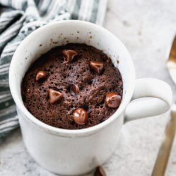

Chocolate Mug Cake

How to make a delicious chocolate cake quickly in your microwave
Have you ever craved a little sweet treat? This is the perfect recipe to get
your sweet fix. This recipe is simple, fast, and calorie conscious. Enjoy your
chocolately treat today!
Ingredients
- 3 Tbsp all-purpose flour
- 2 Tbsp granulated sugar
- 1 Tbsp unsweetened cocoa powder
- 1/4 teaspoon baking powder
- dash salt
- 3 tablespoons milk (any kind of milk)
- 1 tablespoon melted butter
- 1/2 teaspoon vanilla extract
- 1 tsp chocolate chips
Steps
- Spray the bottom of a microwave-safe mug lightly with cooking spray.
Add flour, sugar, cocoa powder, baking powder, and salt and stir together.
- Add milk, melted butter, and vanilla extract and stir until smooth, being sure
to scrape the bottom of the mug. Stir in chocolate chips or sprinkle them on top.
- Cook in microwave for 70-90 seconds (see note) until cake is just set, but still
barely shiny on top. (see notes below). Allow to rest in microwave for 1 minute
before consuming.
Home